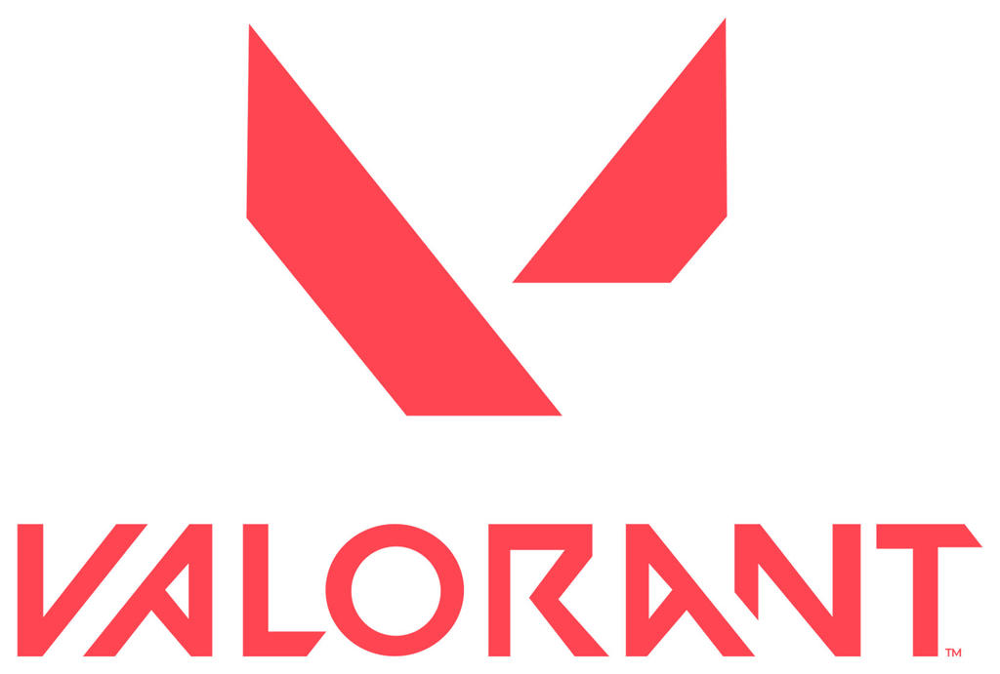

Example
-
CS:GO (Counter-Strike: Global Offensive)

Developed by Valve and Hidden Path Entertainment, CS:GO is the fourth entry in the classic Counter-Strike series. The game emphasizes team-based tactical shooting, where players are divided into Terrorists and Counter-Terrorists competing in objectives such as bomb planting/defusal or hostage rescue. With its realistic gunplay and high competitiveness, CS:GO has become one of the world’s most popular esports titles.
-
Valorant
Created by Riot Games, Valorant combines tactical shooting with unique character abilities. In its 5v5 matches, players choose “agents,” each with distinct skills and playstyles, blending precise gunplay with strategic ability usage. The game focuses heavily on teamwork and strategy, and it has quickly risen as a major force in the esports scene.
-
Delta Force

Delta Force, formerly Delta Force: Hawk Ops, is a free-to-play first-person tactical shooter video game developed and published by TiMi Studio Group and Garena respectively for Windows PC, iOS and Android devices, while the home consoles launch arrived on August 2025. It is part of the computer FPS Delta Force series, previously developed and published by NovaLogic.